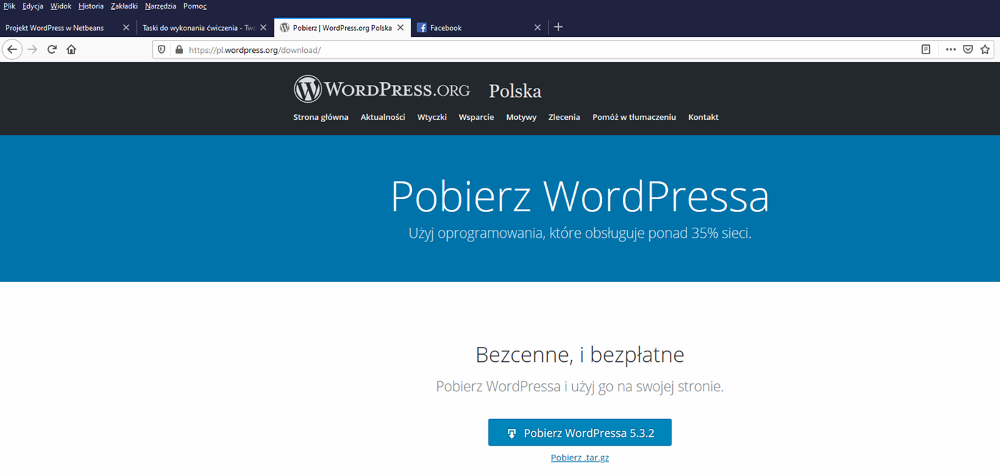

1. Celem zadania jest wykonanie Motywu dla CMS Wordpressa.
Ćwiczenie pokazuje sposób tworzenia nowego motywu oraz wykorzystanie funkcji bloginfo() z wordpresie.
W pierwsza część ćwiczenia koncentruje się na przykładowych animacjach css oraz na prostej stronie, która nie jest RWD.
Strona będzie wymagać opracowania własnych animacji oraz dostosowania jej do RWD.
2. Całość wyglądu strony prezentuje poniższy screen
Wprowadzenie
1. Pobieramy CMS'a Wordpress ze strony: POBIERZ WORDPRESSA

2. Rozpakowujemy pobranego wordpressa i wrzucamy go do kalatogu: C:\xampp\htdocs\imienazwisko\

3. Pobieramy środowisko pracy NetBeans ze strony oraz samodzielnie instalujemy oprogramowanie: POBIERZ NetBeans
4. W razie problemów z instalacją, proszę pytań na fb lub drogą mailową
5. Dodajemy plug WordPressa w NetBeans po uruchomieniu programu
6. Następnie przechodzimy do zakładki "Available Plugin(1/...)" i wpisujemy w polu: Search: "Wordpress" i zaznaczamy pole checkbox "PHP WordPress Blog/CMS" Instalujemy i zamykamy okno